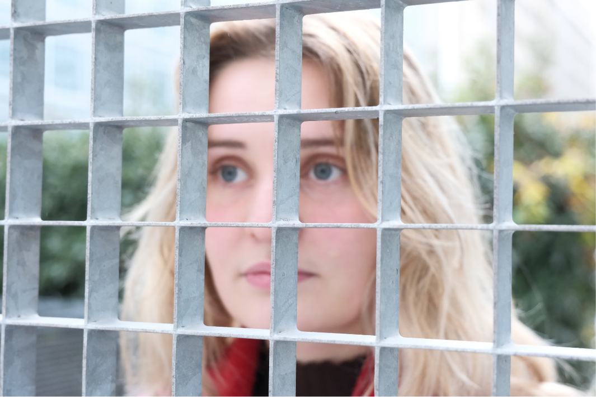
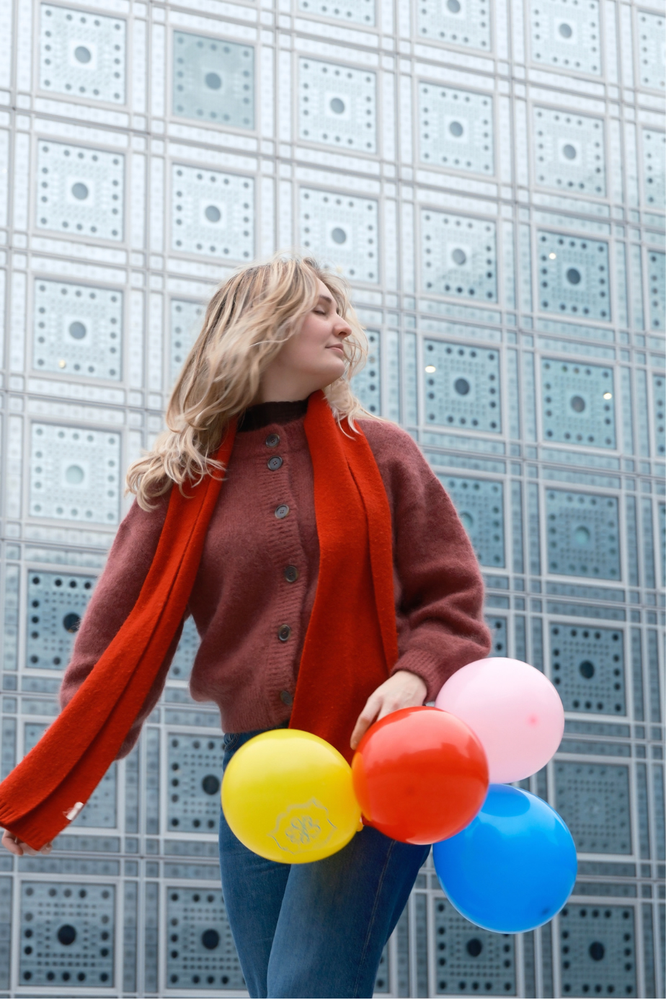
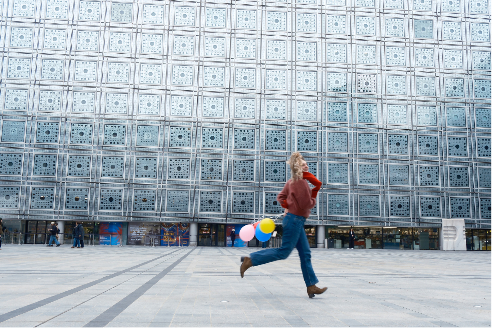
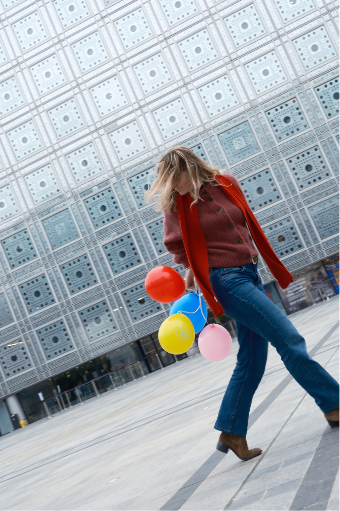
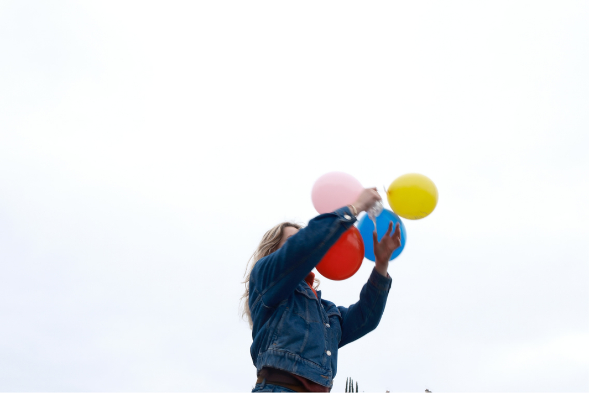
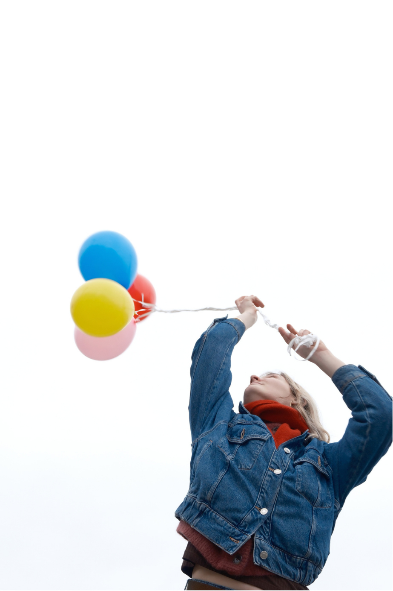
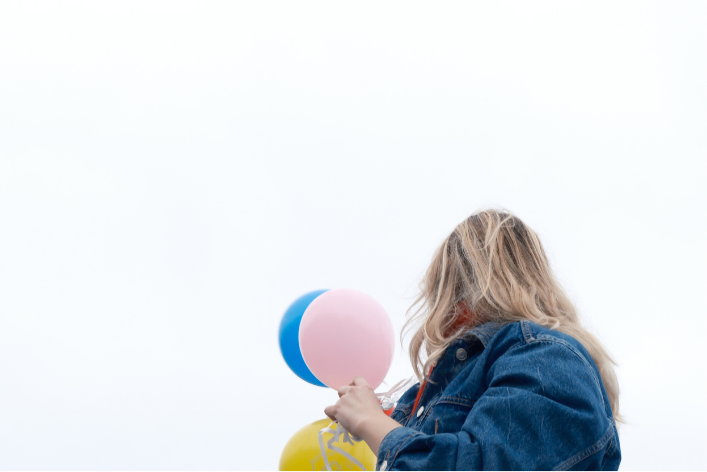
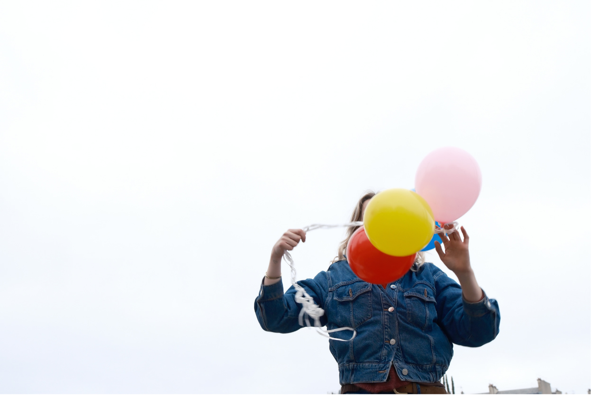
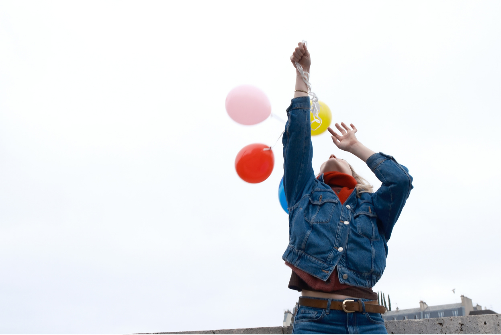
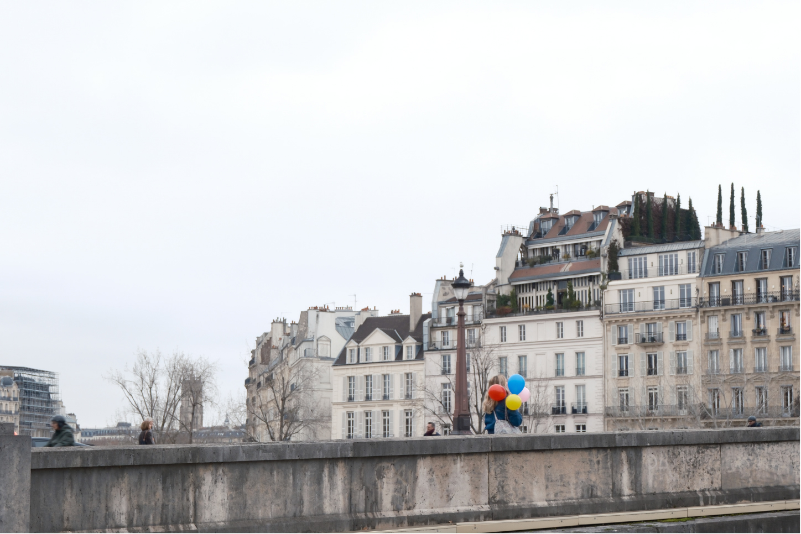

Couleurs sur Marie
Dans les images que l'on voit partout, nos vies sont souvent une bordure : un détail, une couleur en plus. Et quand elles sont au centre, il est presque toujours question de lutte, de douleur, de mort. Ce sont des récits nécessaires, pour hier et pour aujourd'hui. Pourtant ça me fatigue. Nos vies ont beaucoup d'autres facettes, et je voudrais un avenir où l'égalité et la liberté ne coûtent plus si cher.
J'ai choisi de montrer des images faites dans le bonheur : une vie ordinaire, pleine de couleur, où il y a des instants de joie et de mélancolie comme chez tout le monde — quelque chose que l'on aurait envie de contempler depuis un fauteuil.
Cette série a été réalisée lors d'une séance en novembre 2025. Le soleil de cette saison est mystérieux ; j'étais attirée par l'idée de le capturer justement parce qu'il apparaît peu et sans prévenir. À l'approche du rendez-vous, j'ai compris qu'il ne viendrait pas. « Il faut que j'achète des ballons », ai-je alors décidé en cinq secondes.
Marie est un prénom que l'on trouve partout. Marie, c'est moi, c'est ta nièce, c'est un pont sur la Seine. C'est la reine d'Écosse, c'est la figurine en porcelaine que sa grand-mère préférait. Voici ce que j'ai posé sur elle.

01
02
03
04
05
06 07
07
08
09
10
11